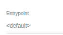
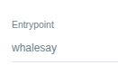

Ways to call a (cluster)workflowtemplate¶
Call the whole template with workflowTemplateRef¶
We can create a workflow specifying a (cluster)workflowtemplate to be launched using spec.workflowTemplateRef. We can also provider parameters where that they will be passed to the entrypoint.
apiVersion: argoproj.io/v1alpha1
kind: Workflow
metadata:
generateName: myworkflow-
spec:
workflowTemplateRef:
name: myclusterworkflowtemplate
clusterScope: true # this calls a clusterworkflowtemplate. If false or ommited (default), it calls a workflowtemplate
arguments:
parameters:
- name: message
value: "Hello, world!"
No template inside the the (cluster)workflowtemplate is selected. The default one will be used and it will receive the parameters.
In the UI

We cannot use spec.templates if we are using spec.workflowTemplateRef. This throws an error
Templates is invalid field in spec if workflow referred WorkflowTemplate reference
From a task or step with templateRef¶
We can invoke a (cluster)workflowtemplate from a task or step defined in a dag or steps template using templateRef. In this case we must choose what template will be chosen form the (cluster)workflowtemplate as entrypoint.
apiVersion: argoproj.io/v1alpha1
kind: Workflow
metadata:
generateName: myworkflow-
spec:
entrypoint: main
templates:
- name: main
dag:
tasks:
- name: main
templateRef:
name: myclusterworkflowtemplate # this calls a clusterworkflowtemplate. If false or ommited (default), it calls a workflowtemplate
template: whalesay # choose the desired template from the (cluster)workflowtemplate
clusterScope: true
arguments:
parameters:
- name: message
value: "Hello from task"
In the UI

Precedence¶
A workflow can call a (cluster)workflowTemplate and this (cluster)workflowTemplate can call other (cluster)workflowTemplate(s).
For example:
Workflow > (cluster)workflowTemplate A > (cluster)workflowTemplate B
Argo Workflows handles nested template calls by dynamically expanding and composing templates at runtime.
-
When submitting the workflow, Argo workflows resolves (cluster)workflowTemplate A and then (cluster)workflowTemplate B. This continues until all template references are resolved into concrete steps.
-
Parameters, volumes, and other configurations cascade down through template calls. So parameters, volumes and other metadatas at higher levels take precedence with lower levels if defined in both. With ServiceAccount, the most specific serviceAccount definition wins
-
The result is a single, expanded Workflow object with all steps defined concretely. Once expanded, the final Workflow doesn't change even if source templates are modified
# Workflow (highest precedence)
spec:
arguments:
parameters:
- name: image-tag
value: "v1.0.0" # This wins
workflowTemplateRef:
name: deploy-template
# WorkflowTemplate (middle precedence)
spec:
arguments:
parameters:
- name: image-tag
value: "latest" # Overridden by Workflow
- name: namespace
value: "staging" # This wins (not defined in Workflow)
templates:
- name: main
templateRef:
name: build-template
template: build
# WorkflowTemplate 2 (lowest precedence)
spec:
arguments:
parameters:
- name: image-tag
value: "dev" # Overridden
- name: namespace
value: "default" # Overridden
- name: registry
value: "harbor.local" # This wins (not defined upstream)
Result: image-tag: "v1.0.0", namespace: "staging", registry: "harbor.local"